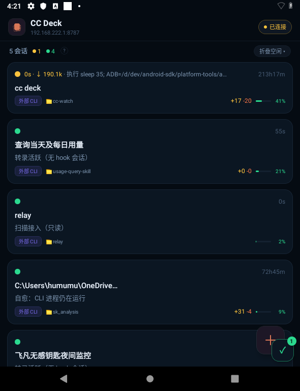
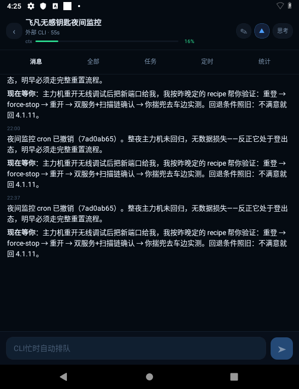

右侧引用仓库已有手机 PNG，能直接对照现网视觉，但不代表今天重新抓取。
B 轨 · Codex · 先审后拍
v8 UI 还原批：手机端逐屏对照图
本稿只做手机端审图，不改 `expo-app` 业务实现。左侧是从 v8-ui-interactive-v2.html 提取的目标形态，右侧优先放现网截图；缺少历史截图的页面明确标为“现网代码态”，不把结构推断冒充真机证据。
审图结论先行
现网已经有底部四域骨架，但团队详情仍是“任务板 + 折叠编制 + 活动 + 经验 + 铁律”的单页长滚动；v8 的关键差异是二级团队页的「对话 / 看板 / 成员」同级 Tab、看板吸顶总览，以及成员卡的三色 watchdog 双信号。以下 03、04 是本轨第一优先级，未获拍板不写实现。
右侧用现网源码结构示意，页面没有可靠历史截图时只陈述源码事实。
左侧目标只取手机设计，不搬原型演示提示、自动演示字幕或桌面脚手架。
逐屏 A/B 对照
编号顺序就是建议的实施簇顺序；03 / 04 属结构级还原。
01结构优先
会话列表 · root
v8 以团队入口卡 + 分组会话卡为主，底部四 Tab 常驻。
v8 目标形态L1888–1953
9:41◔ ◔ ▰
🤖cc-deck M1 攻坚团
⌄ cc-deck · 进行中 4
🎨ui-review 走查
🤖团队模式设计稿 v6
📦0.5.2-test.15 出包
⌄ blog · 已完成 2
🔧主题模板调试
▢会话
♟团队1
□项目
⚙设置
现网截图 · 列表expo-app/v8.png

现网证据：截图显示 relay 头部、统计条、会话卡与右下 FAB；没有 v8 的团队入口卡和四域底栏。
① 团队入口位置
v8 把团队作为列表第一张 hero card；现网仍以 relay / 统计 head 占据首屏。
② 卡片节奏
目标是头像、标题、状态点、分组说明的轻卡密度；现网卡片带更多旧版运行统计。
③ 冲突面
本轨只提取列表下方的团队卡/组织结构；现网顶部与 head 区留给兄弟单。
v8: docs/mockups/v8-ui-interactive-v2.html:1888 · current: expo-app/src/screens/ListScreen.tsx:1604
02结构优先
团队主页 · root
v8 是轻量团队卡列表；确认入口和开团提示都在同一屏内完成扫读。
v8 目标形态L2038–2067
9:41◔ ◔ ▰
🤖cc-deck M1 攻坚团
🧹v0.5.2 双端发版团
开团：描述目标 → Leader 建议编制 → 你确认 → 自动建 worktree 并 spawn 全员
▢会话
♟团队1
□项目
⚙设置
现网代码态 · TeamTabOrgTabs.tsx:28–145
待你确认 · 1ConfirmCard
决议卡 · 建团 / 追加规则
cc-deck M1 攻坚团运行中
派单发起、任务板操作、经验与铁律管理请用电脑端
点团队卡看看板、编制、活动、经验与铁律
证据等级：源码确认当前有确认队列、状态胶囊、两行团队卡和说明文案；尚无同批真机截图。
① v8 卡面
团队卡沿用会话 hero card，成员/进行中/待装机直接在副行扫读。
② 现网额外队列
现网把确认卡队列置顶，这是功能面保留项；只收敛卡面、留白和底栏节奏。
③ 不改决议流
确认卡仍走现有 `useOrgDecide`，本批只调整结构与呈现。
v8: docs/mockups/v8-ui-interactive-v2.html:2038 · current: expo-app/src/screens/OrgTabs.tsx:54
03P0 · 重点拍板
团队详情 · 看板 Tab
v8 关键还原：二级页独立 Tab + 吸顶总览 + 竖向泳道，低频活动收进 ⋯。
v8 目标形态L2070–2145
9:41◔ ◔ ▰
对话看板 1成员⋮
待认领 2进行中 4待验收 2待装机 2完成 1
⚡ 就绪待装机 2
T-13 更新通道隔离收尾已回填 2/3 · 差 1 项确认 → 收单
T-20 导入码迁移修复中 · 暂缓装机
进行中 4
T-12 任务板数据模型worker-relay · glm-5.3-air
T-15 手机只读看板worker-mobile · 写操作标 M2
待认领 2
T-16 收团归档清理待认领
现网代码态 · TeamDetailPageTeamDetailPage.tsx:407–481
待你确认 · 1有卡才渲染
验收决议卡
任务板纵向五态
就绪待装机 · 22
进行中 · 44
编制 · 6 人（Leader 兼管）▸ 默认折叠
活动 · 派单回执时间线
经验 / 铁律 / 熟手池继续排在同一长页中
差异已确认：当前没有团队详情内层 `ptabs`，看板与编制/活动共处一条 ScrollView。
① 吸顶总览
目标保留泳道比例和图例，滚动时总览固定；点分段跳到对应泳道。
② 任务卡信号
目标卡面保留自验点、验收单入口、执行者和状态色，三行内完成扫读。
③ 数据与写面
复用现有 `board` / `orgDetail` 读面；不新建 store 写口，不开放手机板操作。
v8: docs/mockups/v8-ui-interactive-v2.html:2070 · current: expo-app/src/screens/TeamDetailPage.tsx:454
04P0 · 重点拍板
团队详情 · 成员 Tab
v8 成员是独立名册视图：角色、引擎、三色状态、上下文水位和 watchdog 双信号同卡表达。
v8 目标形态L2080–2085 · L2147–2157
9:41◔ ◔ ▰
对话看板成员⋮
👑glm-5.3
Leader
指挥 · 兼验收
旁听消息接替
🛠glm-5.3-air
worker-relay
开发
旁听消息接替
🧪claude-opus
验收
独立出包 · 认知独立
旁听消息接替 ↗
三色 = watchdog 双信号（心跳 + 日志）· 接替 = 同身份重 spawn
现网代码态 · 折叠编制TeamDetailPage.tsx:466–481
任务板当前首屏
T-12 任务板数据模型
编制 · 6 人（Leader 兼管）▸ 点击展开
👑展开后显示成员卡
活动 · 派单回执再向下滚动
当前成员卡可点击进会话，但没有成员 Tab、旁听/消息/接替动作行或双信号解释。
现网已有：成员卡和上下文比例；尚缺：独立 Tab、状态/信号双轴、动作行与成员视图入口。
① 独立 Tab
成员不再被任务板压到长页下方；默认可一击进入名册。
② 双信号
状态色只表达在线/失联/滞留，另用心跳与日志两条信号表达 watchdog 依据。
③ 安全边界
接替仍只触发现有会话入口/业务动作；本轨不改变 spawn、额度或协议。
v8: docs/mockups/v8-ui-interactive-v2.html:2147 · current: expo-app/src/screens/TeamDetailPage.tsx:332
05广扫纳入
项目主页 / 项目详情
v8 项目是底部一级域，详情采用只读聚合四分节，写操作回原域。
v8 目标形态L2178–2250
9:41◔ ◔ ▰
▣ cc-deck
▣ windclaw-qclaw
▣ blog
项目按目录自动识别 · 也可 ＋ 手动打开本机目录
▢会话
♟团队1
□项目
⚙设置
现网代码态 · ProjectsTabOrgTabs.tsx:147–359
cc-deck活跃
未立项 · 2
项目卡三行制 + 未立项折叠组；项目详情由 TeamDetailPage 承接
取舍：项目数据与动作保留；只对齐 v8 的一级域卡面、详情四分节和“只读聚合”说明。
① 聚合卡
目标用目录、会话、团队、待行动四个短字段完成首屏识别。
② 详情边界
项目详情是跳转索引，不复制会话/团队的写面。
③ 现网功能保留
新建会话于目录、查看项目会话、未立项折叠不删，只换 v8 视觉层级。
v8: docs/mockups/v8-ui-interactive-v2.html:2178 · current: expo-app/src/screens/OrgTabs.tsx:147
06广扫纳入
通知中心 / 验收单
v8 把通知和验收单做成可返回的二级屏；本机验收组可操作，其他端折叠只读。
v8 目标形态 · 二级屏L2229–2270
9:41◔ ◔ ▰
● 需你行动（常驻 · 手动关）
test.19 就绪待装机
验收成员失联 · 额度链走尽
● 注意
worker-mobile 已自动接替
✅ 验收单 · 0.6.0-test.19
① 安装后检查 test 角标✓
② 公司网检查更新未测
提交回填（2/3） → 全过后确认收单
现网代码态 · sheet / headerNotifCenterPage.tsx:157–205
ListScreen.tsx:1729–1743
ListScreen.tsx:1729–1743
通知中心：贴底 Modal / maxHeight 78%
需你行动 · 2
验收单条件卡
当前结构是“顶栏铃铛 → 底部 sheet”，不是 v8 的独立通知二级屏。
通知中心（现网 sheet）
知道了 / 忽略ACK
已处理 N · 默认折叠▾
实现边界：不改通知 ACK 门与验收状态机；是否从 sheet 提升为 v8 二级屏需 Leader 拍板。
① badge 语义
只数需要用户行动的 alert；动态和已处理不挤进 badge。
② 出门回填
验收单要能从通知、看板、项目详情落到同一张单，手机行组可直接操作。
③ 不破状态机
当前 ACK、回填、收单逻辑是冻结面，本批只讨论壳与层级。
v8: docs/mockups/v8-ui-interactive-v2.html:2229 · current: expo-app/src/screens/NotifCenterPage.tsx:1
07详情结构冻结
会话详情 / 设置与连接
会话详情是结构冻结面；设置二级页只吸收 v8 的 appbar、行卡和安全边界。
v8 目标形态 · 会话详情L1956–2037
9:41◔ ◔ ▰
消息任务输出物全部⋮
↑ 上滑加载更早 · 点击试试
Claude
⇅ 已补齐断连期间的 6 条消息
⏸ 在等你确认
现网截图 · 会话详情expo-app/v13.png

冻结口径：消息 / 任务 / 输出物 / 全部等现网能力不重排；只允许局部 token、确认条和补洞表达向 v8 收敛。
① 详情 head
返回、标题、状态、上下文和底部输入区保持现网导航链，不在本轨重构。
② 局部取材
可吸收 v8 的低频菜单收纳、历史补洞提示和 waiting_request 结构化条。
③ 设置安全边界
设置/连接/模型服务仍保留凭证只存电脑、手机浏览态等现有边界。
v8: docs/mockups/v8-ui-interactive-v2.html:1956 · current: expo-app/src/screens/DetailScreen.tsx
Leader 拍板后实施簇
先锁结构，再逐屏截图；每簇完成后单独 `tsc` 与模拟器回执。
团队详情壳
只改 `TeamDetailPage.tsx`：二级页头、`对话 / 看板 / 成员` Tab、吸顶总览容器。
冲突面：团队详情文件
看板 / 成员两屏
看板泳道与成员名册按 v8 卡型拆屏；继续复用现有 `board`、成员快照和会话跳转。
冲突面：TeamDetailPage 内部
组织根页
团队/项目 root 卡面、确认队列、项目只读聚合与底栏视觉向 v8 对齐。
冲突面：OrgTabs / BottomTabs
冻结面 token
通知、验收单、会话详情和设置只做颜色、圆角、留白、局部状态表达，不重排业务结构。
冲突面：Detail / Notif / Settings